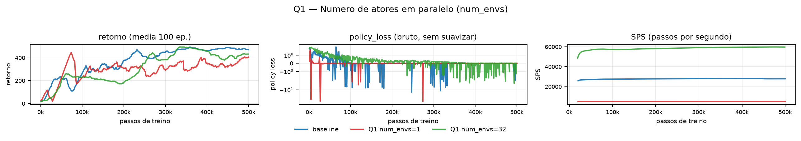
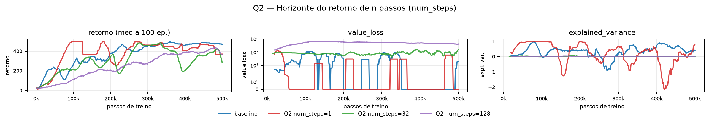
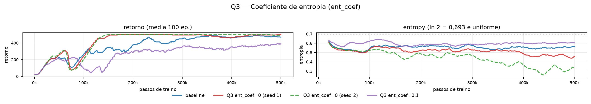
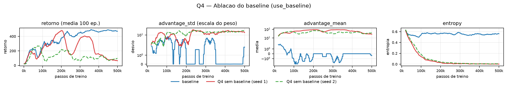
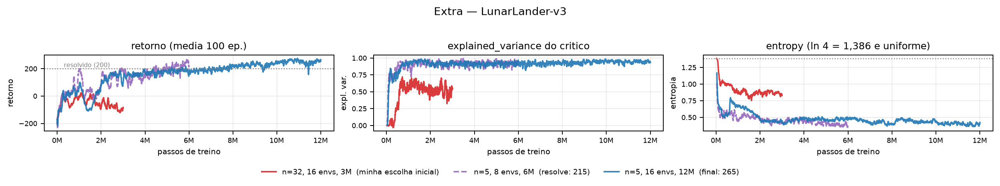

As três partes de implementação estão em algorithms/a2c.py
(compute_n_step_returns, compute_policy_loss) e
networks/discrete_actor_critic.py (get_action_and_value). Os 14 testes de
tests/test_a2c.py passam. O baseline chega a retorno médio 478 nos últimos 30% do treino,
com pico em 493. As previsões foram escritas e gravadas antes de qualquer varredura
(relatorio/previsoes.md).
Previsão. O lote de cada atualização é num_envs x num_steps, então com 1
ambiente ele cai para 5 transições e o policy_loss deve ficar bem mais ruidoso, porque a
média de 5 amostras estima mal o gradiente. Com 32 o gradiente fica limpo, mas cabem 4 vezes menos
atualizações em 500k passos, então ele pode até terminar atrás. O SPS deve subir bastante.
Varredura. num_envs em {1, 8 (baseline), 32}.

kj0lbfb9 · 1 env: tv30atv4 · 32 envs: c1x4217s.Explicação. O ruído do gradiente aparece direto no desvio-padrão do
policy_loss: 4,45 com lote de 5, 1,37 com lote de 40 e 0,74 com lote de 160. A queda
acompanha de perto o 1/raiz(B) que a média amostral prevê, e no gráfico do meio isso vira os picos
fundos do run vermelho, que chega a passar de -10 enquanto os outros dois ficam contidos.
O enunciado pede para separar dois efeitos que andam juntos, e os números deixam fazer isso. Com 1 ambiente o agente executa 100.000 atualizações, oito vezes mais que as 12.500 do baseline, e mesmo assim termina pior (mediana 341 contra 478). Ou seja, atualizar mais vezes não compensa seguir um gradiente ruim. Do outro lado, com 32 ambientes são só 3.125 atualizações e o retorno fica em 429, um pouco abaixo do baseline: aqui o gradiente é o mais limpo dos três, mas faltam passos de otimização. O melhor ponto fica no meio, que é onde o baseline está. O SPS vai de 5.091 para 28.107 e depois 59.757, quase 12 vezes, porque dar um passo em 32 ambientes vetorizados custa quase o mesmo que em 1. É isso que o paralelismo compra: tempo de relógio, não qualidade por atualização. A previsão se confirmou nos três pontos, inclusive na suspeita de que 32 terminaria atrás.
Previsão. Com num_steps=1 o alvo é quase todo bootstrap, com pouca
variância e muito viés vindo de um crítico ainda errado; com 128 é quase Monte Carlo, com pouco viés
e muita variância. Espero value_loss pequeno no 1 e grande no 128. Aposto que o baseline
de 5 fica no melhor ponto. Desconfio da armadilha do enunciado: no num_steps=1 o crítico está sendo
medido contra si mesmo.
Varredura. a2c.num_steps em {1, 5 (baseline), 32, 128}.

kj0lbfb9 · n=1: gfqub3oy · n=32: zurv8rao · n=128: joxko0pd.| num_steps | 1 | 5 (baseline) | 32 | 128 |
|---|---|---|---|---|
| value_loss mediano | 0,00 | 0,00 | 31,01 | 458,89 |
| explained_variance mediana | 0,529 | 0,712 | -0,000 | 0,001 |
| desvio da explained_variance | 1,684 | 0,501 | 0,000 | 0,002 |
| retorno (mediana, 30% final) | 435,2 | 478,0 | 357,5 | 387,6 |
Explicação. O value_loss cresce de forma monótona com o
horizonte, de praticamente zero em n=1 e n=5 para 31 em n=32 e 459 em n=128. Isso é a variância do
alvo aparecendo: quanto mais recompensas reais entram na soma antes do bootstrap, maior a dispersão
do número que o crítico precisa acertar. É o lado "muita variância" do Monte Carlo.
A armadilha se confirmou, e de um jeito mais interessante do que eu esperava. Com n=1 o alvo é
r + gamma*V(s'), e como estados vizinhos no CartPole têm valores parecidos, V(s) é quase igual a
V(s'). O crítico está prevendo algo quase idêntico à própria saída deslocada de um passo, então
value_loss perto de zero não quer dizer crítico bom, quer dizer alvo fácil e
autorreferente. A explained_variance denuncia isso de outra forma: ela é a mais instável
de todas as configurações (desvio 1,684, oscilando entre +1 e -2 na figura), porque a variância dos
alvos no denominador é minúscula e qualquer erro explode a razão. Já em n=32 e n=128 ela fica colada
em 0,000 com desvio praticamente nulo, o que significa um crítico que não explica nada da variância
do retorno. O ator sofre junto porque a vantagem R - V(s) é a única coisa que pesa o gradiente: se V
não acompanha R, o peso vira quase o retorno bruto e carrega toda a variância dele. O retorno final
confirma o ponto médio: o baseline n=5 termina melhor (478) que n=32 (358) e n=128 (388). A previsão
se confirmou quase toda, com uma correção: eu não esperava que n=1 fosse o mais rápido no começo,
chegando a 500 por volta de 100k passos antes de perder para o baseline no fim.
Previsão. Com ent_coef=0,1 o bônus domina e a política é empurrada para ficar uniforme, então espero a entropia parada perto de ln 2 = 0,693 e o retorno estacionando bem abaixo de 500. Com ent_coef=0 a entropia deve despencar e a política virar determinística cedo. No CartPole isso pode não ser fatal, mas espero mais diferença entre as duas seeds.
Varredura. a2c.ent_coef em {0 (2 seeds), 0,01 (baseline), 0,1}.

kj0lbfb9 · ent=0 s1: rvz5tdoh · ent=0 s2: ncgqp1cn · ent=0,1: e6ja6b30.Explicação. O lado do ent_coef alto saiu como previsto. Com 0,1 a entropia é a mais alta do gráfico o treino inteiro, por volta de 0,60, e o retorno estaciona em 358. O motivo é que o bônus entra na perda multiplicado por 10 vezes o valor do baseline, então manter a política aleatória passa a render mais do que melhorar a política. O agente é literalmente pago para continuar indeciso. A entropia não chega a colar em ln 2 porque o termo de política ainda puxa contra, mas fica claramente acima dos outros três runs.
O lado ent_coef=0 refutou minha previsão. As duas seeds chegam a 500 por volta de 150k passos e ficam lá, com medianas finais de 490 e 500, acima do próprio baseline (478). E a entropia não colapsou: caiu devagar até 0,45 e 0,33, longe do zero que eu esperava. O CartPole é benevolente por três motivos que se somam: só duas ações, então mesmo uma política quase determinística ainda amostra a outra com probabilidade razoável; recompensa densa, +1 a cada passo, então há sinal de gradiente em toda transição; e episódio que termina no erro, o que devolve o agente ao início e gera experiência nova automaticamente. Num ambiente com muitas ações, ficar determinístico cedo tranca regiões inteiras do espaço de ações que nunca mais seriam amostradas. Com recompensa rara, o problema é pior: se a política se fecha antes de encontrar a primeira recompensa, não existe gradiente nenhum para corrigir o rumo, e o bônus de entropia é o que mantém a busca viva até lá.
Previsão. Sem o baseline o peso vira o retorno bruto. No CartPole toda
recompensa é +1, então esse peso é sempre positivo e grande, enquanto a vantagem fica centrada em
zero. Espero advantage_mean saltando para bem positivo e advantage_std
várias vezes maior. Como todo peso é positivo, toda ação amostrada tem a probabilidade empurrada
para cima, o que deve colapsar a entropia mais rápido.
Varredura. a2c.use_baseline=false, 2 seeds.

kj0lbfb9 · sem base s1: slkzh30b · sem base s2: 35ymeph9.Explicação. Os dois gráficos de advantage_* mostram o
resultado teórico da aula com bastante clareza. Com baseline, o advantage_mean oscila em
torno de zero, passando por valores positivos e negativos, e o advantage_std fica na
casa de 0,01 no fim do treino, quando o crítico já acompanha bem os retornos. Sem baseline, a média
sobe para a faixa de 50 a 100 e nunca cruza o zero, e o desvio fica entre 9 e 12. Subtrair V(s) não
mudou para onde o gradiente aponta em esperança, mudou a escala e a dispersão do peso que multiplica
cada log-probabilidade, que é exatamente o que a teoria diz.
A consequência prática é severa. Como todo peso é positivo, cada ação que foi amostrada tem a probabilidade empurrada para cima, sem exceção, e a magnitude do empurrão depende do retorno e não da qualidade relativa daquela ação. Quem for amostrada mais vezes ganha, mesmo sendo pior. Isso é realimentação positiva: a ação um pouco mais provável é amostrada mais, sobe mais, e o ciclo se fecha. A entropia despenca para 0,000 nos dois seeds por volta de 200k passos, contra 0,56 do baseline, e o retorno acompanha: a seed 1 chega a 480 em torno de 200k e depois desaba para 120, e a seed 2 nunca passa de 269 e termina em 94. A previsão se confirmou inteira, e o cruzamento com a Q3 fecha o argumento: lá, tirar o bônus de entropia sozinho fez a entropia só derivar até 0,33 e o agente resolveu a tarefa; aqui, mantendo o bônus mas tirando o baseline, ela zera. O colapso vem do peso sempre positivo, não da ausência do bônus.
O que eu esperava e o que mudei. Parti do a2c_cartpole e
mudei três coisas: mais passos (o CartPole resolve em 500k), mais ambientes e, principalmente,
num_steps de 5 para 32. O raciocínio era que o sinal que importa no LunarLander é o
pouso, que chega no fim do episódio, então um alvo de 5 passos quase não o enxergaria.
Varredura. num_steps em {5, 8, 32}, num_envs em
{8, 16, 32} e orçamento em {3M, 6M, 12M} passos. Config final em
configs/a2c_lunarlander.yml.

qd17pm5u · n=5 8env: 41ywr8g5 · final: wbz9hx6x.| configuração | n=32, 16 envs, 3M | n=8, 16 envs, 6M | n=5, 32 envs, 6M | n=5, 8 envs, 6M | n=5, 16 envs, 12M |
|---|---|---|---|---|---|
| retorno final | -83 | -60 | -64 | 215 | 265 |
O que aconteceu. A minha escolha de num_steps=32 foi a pior
de todas, terminando em -83 contra +98 do mesmo treino com n=5. O painel do meio explica: o
explained_variance do crítico fica em torno de 0,5 com n=32 e em 0,95 com n=5. É o mesmo
mecanismo da Q2, só que amplificado. No CartPole a recompensa é sempre +1 e o retorno de 32 passos
ainda é um número contido; aqui ele soma recompensas que vão de -400 a +250, então a variância do
alvo explode e o crítico não consegue acompanhar. Quando V(s) não acompanha R, a vantagem R - V(s)
vira quase o retorno bruto e o gradiente de política passa a carregar todo esse ruído.
O segundo padrão que apareceu foi o da Q1, também invertido em relação ao que eu tinha chutado.
Aumentar o lote piorou: 32 ambientes deu -64 e num_steps=8 deu -60, enquanto a
configuração vencedora com 6M passos foi a de menor lote, 8 ambientes, que resolveu com 215.
Com orçamento fixo de passos, lote menor significa mais atualizações, e aqui isso pesou mais que a
limpeza do gradiente. A versão final, com n=5, 16 ambientes e 12M passos, cruza o limiar de 200 por
volta de 5M e termina em 265, com avaliação greedy de 270,9 ± 16,9 e 10 de 10 episódios acima
de 200. O que mais mudou em relação ao CartPole foi o orçamento: 24 vezes mais passos para uma tarefa
com o dobro de ações e recompensa muito mais dispersa. A entropia acompanha: começa em ln 4 = 1,386,
cai para perto de 0,45 e fica lá, sem colapsar, que é o bônus de entropia fazendo o trabalho que a
Q3 descreve.